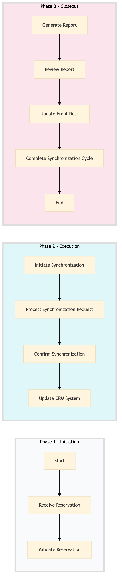

| Role | Steps |
|---|---|
| Revenue Manager | 1.1 1.2 2.1 2.2 2.3 2.4 3.1 3.2 |
| Front Desk Agent | 3.3 |
| Step | Name | Role | System | Input | Output | KPI | Dec? | Exc? | Pain Point / Risk |
|---|---|---|---|---|---|---|---|---|---|
| 1.1 | Receive Reservation | Revenue Manager | SynXis CRS | New reservation details | Reservation record in SynXis CRS | Less than 2 min | N | Y | Handling last-minute changes or cancellations |
| 1.2 | Validate Reservation | Revenue Manager | SynXis CRS | Reservation record in SynXis CRS | Validation report | Less than 1 min | Y | N | Ensuring accurate guest information |
| 2.1 | Initiate Synchronization | Revenue Manager | SynXis CRS | Validation report | Synchronization request sent to Oracle OPERA Cloud | Less than 30 sec | N | Y | Network connectivity issues |
| 2.2 | Process Synchronization Request | Revenue Manager | Oracle OPERA Cloud | Synchronization request | Updated reservation record in Oracle OPERA Cloud | Less than 1 min | Y | N | Handling conflicting data |
| 2.3 | Confirm Synchronization | Revenue Manager | Oracle OPERA Cloud | Updated reservation record in Oracle OPERA Cloud | Confirmation message to SynXis CRS | Less than 30 sec | N | Y | Ensuring real-time updates |
| 2.4 | Update CRM System | Revenue Manager | Marriott Bonvoy CRM | Updated reservation record in Oracle OPERA Cloud | CRM system updated with guest information | Less than 1 min | Y | N | Data consistency across systems |
| 3.1 | Generate Report | Revenue Manager | Oracle OPERA Cloud | Updated reservation record in Oracle OPERA Cloud | Synchronization report | Less than 2 min | N | Y | Complex reporting requirements |
| 3.2 | Review Report | Revenue Manager | Oracle OPERA Cloud | Synchronization report | Report review and action plan | Less than 1 min | Y | N | Identifying discrepancies |
| 3.3 | Update Front Desk | Front Desk Agent | Oracle OPERA Cloud | Report review and action plan | Updated guest check-in/check-out procedures | Less than 1 min | N | Y | Handling unexpected issues |
| 3.4 | Complete Synchronization Cycle | Revenue Manager | Oracle OPERA Cloud | Updated guest check-in/check-out procedures | Synchronization cycle completed | Less than 1 min | N | Y | Ensuring all systems are in sync |
This process ensures seamless synchronization between the CRS (Central Reservation System) and PMS (Property Management System) at a Marriott full-service hotel, optimizing reservations management and revenue generation.